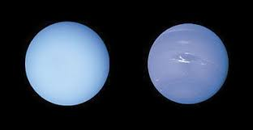

Remarque : les données sont approximatives et basées sur les observations les plus récents
| Catégorie | Image | Détail | |||
|---|---|---|---|---|---|
| Nom | Diamètre (km) | Caractéristiques | |||
| Spécificités | Atmosphère | ||||
| Planète Telluriques | Mercure | 4 879 | Plus proche du Soleil | Très mince, exosphère | |
| Vénus | 12 104 | Atmosphère dense | Dioxyde de carbone, acide sulfurique | ||
| Terre | 12 742 | Seul planète avec de la vie connue | Azote, oxygène | ||
|
Mars | 6 779 | Glace et canyons | CO2, traces d'argon et azote | |
| Planète Gazeuses | Jupiter | 139 820 | Planète la plus massive | Hydrogène, hélium | |
| Saturne | 116 460 | Anneaux spectaculaires | Hydrogène, hélium | ||
| Géante de Glace |  | Uranus | 50 724 | Inclinaison axiale extrême | Métane, Hydrogène |
| Saturne | 49 244 | Vents les plus violents | Métane, Hydrogène | ||
|
Remarque : les données sont approximatives et basées sur les observations les plus récents |
|||||